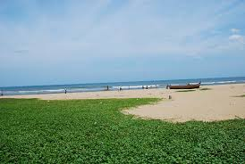

The Breezy beach in Chennai is ideal to spend some time with your friends or family. It is located in Valmiki Nagar and the area nearby is away from all disturbance. If you are in Chennai or you are planning to take a trip, keep this on the top of your list and make sure that you do not miss out on this spot.
Unlike other beaches in Chennai, this is not a very popular one. Not many tourists were aware of this place until the recent years. Mostly it is deserted and there are not many people. It serves as a perfect holiday if you want to relax.
The Breezy Beach in Chennai is within easy reach of any place. The nearest railway station is the Chennai Egmore station. It is approximately around 10 kilometres away. Both bus and taxi station services are available from here. If you wish, you can always hire a personal cab to take you there. The Chennai International Airport is also about 10 kilometres from the Breezy beach. The place is well connected and you will face no trouble to reach there.
